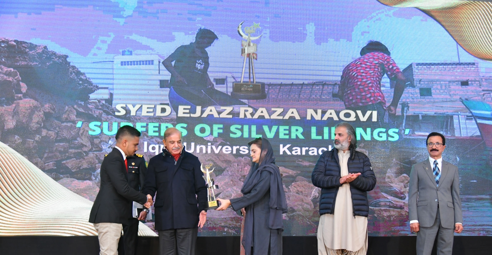

EJAZ RAZA FILMS
TELLING STORIES THROUGH FILM
About

Receiving the Best Documentary Award for Surfers of Silver Linings from the Honorable Prime Minister of Pakistan, Mr. Mian Muhammad Shahbaz Sharif, at the National Amateur Short Film Festival 2022.
Recognition
NASFF 2022
National Award • 2022
Winner: Best Documentary Award for "Surfers of Silver Linings"
APP News
News Interview • 2022
"NASFF 2022 winner vows to bring laurels for Pakistan" — A profile on directorial vision.
PID - Government of Pakistan
Institutional • 2022
Official Press Release: National Amateur Short Film Festival (NASFF) 2022
Dunya News
Press Feature • 2022
"Young filmmakers make the nation proud" — Prime Minister awards NASFF winners.
Media Spotlight
News Coverage • 2022
Broadcasting Excellence: NASFF 2022 News Feature
Facebook Recognition
Social Media • 2022
Official Spotlight: Surfers of Silver Linings Best Documentary Win
Behind the Lens
Video Feature • 2022
Award-Winning Directorial Approach: NASFF Interview
Cultural Exchange
Interview • 2024